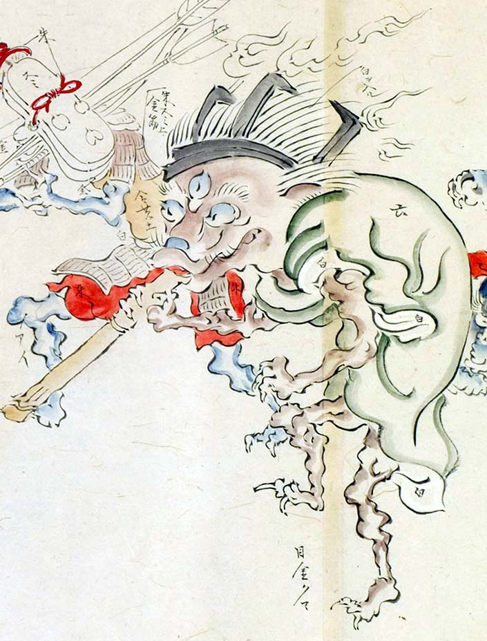

三つ目の化物。緑色の衣を身にまとい、髪を逆立てている。頭に五徳を逆さにかぶっている。頭上には火炎がみえる。火吹きの竹を吹いている。
著作者：玉水写／出典：親書誌：U426_nichibunken_0095：土佐光起百鬼夜行之圖；トサミツオキヒャッキヤギョウノズ／日付：2007／資源識別子：U426_nichibunken_0095_0030_0000
Copyright (c)2010- International Research Center for Japanese Studies, Kyoto, Japan. All rights reserved.